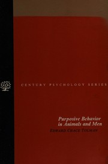

《动物与人的目的性行为》
书·Edward C. Tolman, 1932·Purposive Behavior in Animals and Men

托尔曼主张行为是有目的、指向目标的，并提出用“期望”“认知地图”等中介变量解释动物如何在迷宫中学习。中译名未核实，此处中文题名为直译或沿用旧数据。
- 作者
- Edward C. Tolman
- 年份
- 1932
- 难度
- 深读
- 类型
- 理论原著
- 所属学派
- 新行为主义
- 核心理论
- 认知地图、潜伏学习
版本
- 中文版 《动物与人的目的性行为》 托尔曼 · 浙江教育出版社 · 1999 豆瓣页面 ↗
- 英文版 Purposive Behavior in Animals and Men Edward C. Tolman · Century Co., first edition · 1932 Open Library ↗